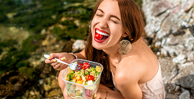

Novidades da semana
alimentação saudável:
Ela deve ser balanceada, rica em proteínas, gorduras, carboidratos, fibras, vitaminas, água e sais minerais. Esses itens são essenciais para todas as pessoas que pretendem ter uma vida melhor.A diversidade de grãos, verduras, legumes e frutas deve fazer parte das refeições do dia a dia.
É uma das melhores maneiras de garantir qualidade de vida, porque faz nosso corpo funcionar de forma adequada e também ajuda na prevenção de doenças.
O ideal é que a alimentação seja composta por uma fonte de carboidrato, uma de proteína e uma de gordura boa, além das fibras. Os benefícios podem ser observados em pouco tempo e só tendem a aumentar com o passar dos anos.